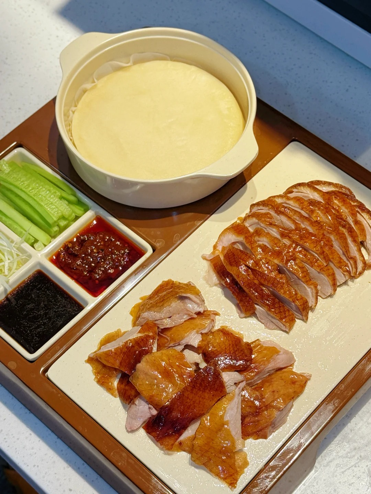
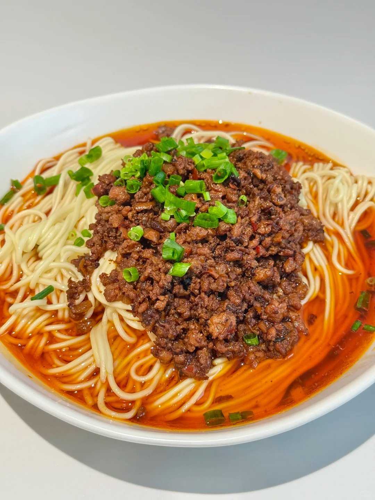
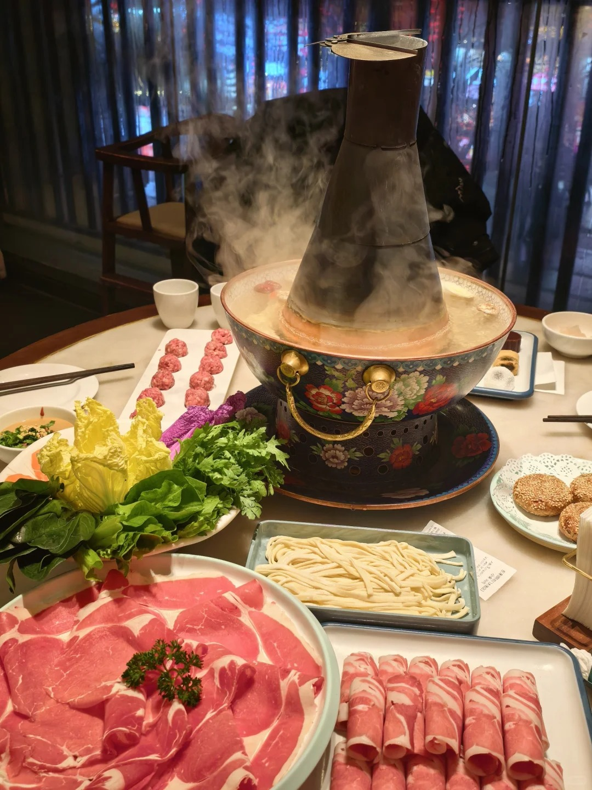
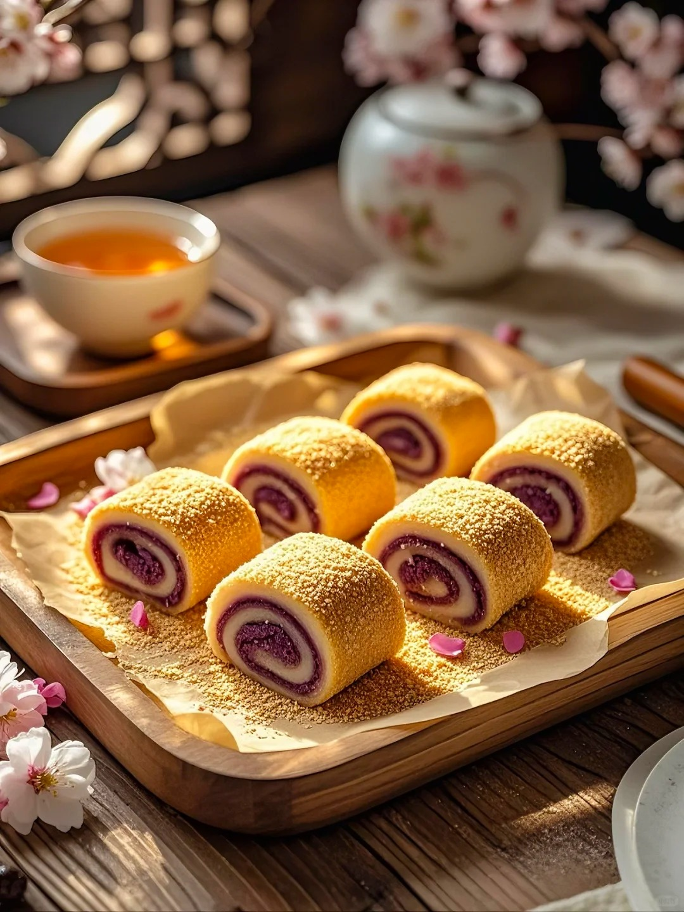

The Royal Feasts & Street Foods
Beijing's cuisine, known as "Jingmai", is heavily influenced by the culinary traditions of other provinces, as well as the sumptuous cooking styles of the imperial court. From roasted duck to sweet street snacks, the city is a paradise for food lovers.

Peking Roast Duck
The undisputed crown jewel of Beijing cuisine. Characterized by its thin, crisp skin, the meat is traditionally sliced in front of diners and served with spring pancakes, sweet bean sauce, and julienned scallions or cucumber.
Find Top Restaurants
Zha Jiang Mian (Fried Sauce Noodles)
A true staple of old Beijing households. It features thick, handmade wheat noodles topped with a rich, savory soybean paste fried with diced pork, accompanied by a colorful array of fresh shredded vegetables.
Local Recipe
Instant-Boiled Mutton (Copper Pot)
Dating back to the Qing Dynasty, this hot pot style uses a traditional copper pot with burning charcoal. Diners dip paper-thin slices of high-quality mutton into a clear broth before coating them in a classic sesame paste dipping sauce.
How to Eat It
Lvdagun (Rolling Donkey)
A classic Beijing pastry made from glutinous rice flour filled with red bean paste, and rolled in roasted soybean flour. The name comes from its dusty appearance, resembling a donkey rolling in the yellow dust of northern China.

Bingtanghulu (Candied Haw)
The nostalgic taste of Beijing winters. Fresh Chinese hawthorn fruit is skewered on a bamboo stick and generously coated in hardened sugar syrup. The resulting treat is perfectly crunchy on the outside, and delightfully sweet and sour inside.

Baodu (Quick-fried Tripe)
A traditional Halal street snack where fresh beef or lamb tripe is blanched in boiling water for exactly a few seconds to retain its crunchy texture. It is eaten dipped in a savory paste made of sesame, soy sauce, and chili oil.